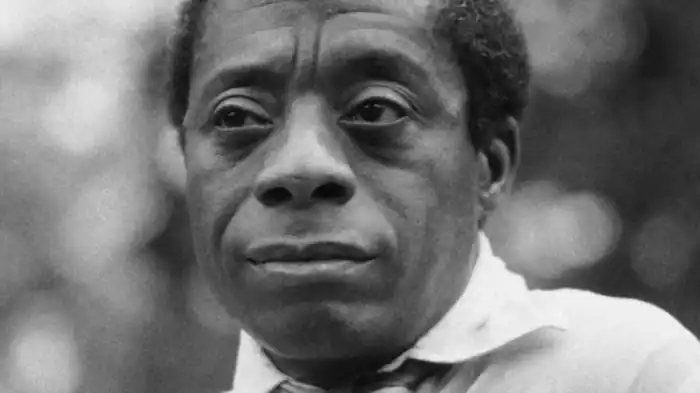
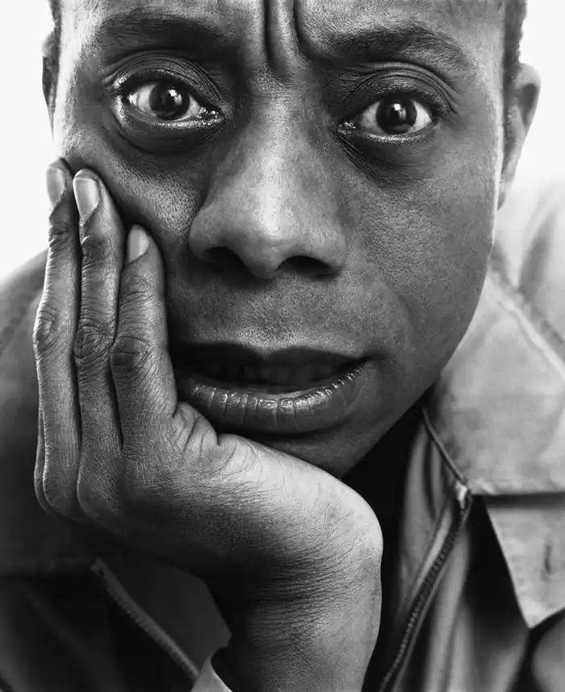

БОЛДУЇН, Джеймс (Baldwin, James — 02.08.1924, Нью-Йорк — 30.11.1987, Рів'єра, Франція) — американський письменник. Дитинство майбутнього письменника було нелегким. У Болдуїна рано проявився потяг до літератури, і вже у 12 років він опублікував у місцевій газеті своє перше оповідання. Натомість вітчим наполягав, щоб хлопчик пішов його шляхом, став священиком.
У 14 років Джеймс пережив релігійне "навернення", проте "служба Богу" незабаром його розчарувала: церковні догми, віра в добро і справедливість перебували у гострій суперечності з тим, що бачив Болдуїн у Гарлемі з його злиднями і нетрищами. Дитячі та юнацькі враження міцно врізались у пам'ять письменника, і Гарлем став "країною Болдуїна", місцем дії багатьох його творів. Релігійне виховання, отримане Болдуїном у дитинстві, згодом позначилося на його художньому стилі, особливо у публіцистиці, з її різноманітними біблійними асоціаціями та проповідницьким пафосом.
У 1942 р. Болдуїн закінчив школу, згодом працював на корабельні, фабриці, проживав певний час у Грінвіч Віледжі, кварталі Нью-Йоркської мистецької богеми, почав публікуватись у журналах. У 1943 р. став свідком расового бунту в Гарлемі. У 40-х pp. поступово сформувалася його життєва філософія: письменник переконався, що расова ненависть згубна для її носіїв не меншою мірою, аніж для її жертв, і що з дискримінацією не можна змиритися. Не бажаючи "співіснувати" з расизмом, Болдуїн у 1948 р. приїхав у Париж, де в основному й жив до смерті. Добровільна еміграція не перешкодила йому постійно перебувати в курсі подій і відгукуватися на ті політичні, соціальні, моральні проблеми, які хвилювали мільйони чорних американців у нього на батьківщині. У Парижі Болдуїн перебував у центрі мистецького життя, зустрічався з американськими літераторами Дж. Джонсоном, Н. Мейлером, В. Стайроном, але особливо важливим стало для нього спілкування з Р. Райтом, перед яким він спочатку благоговів і в якому вбачав свого наставника. Творчість Болдуїна представлена різними жанрами, але при цьому чітко виокремлюються дві групи творів: художні та публіцистичні. Він дебютував романом "Йди і віщай з гори" ("Go Tell It on the Mountain", 1953), побудованім на його гарлемських враженнях, і багато в чому автобіографічнім. Головний герой Джон Грайнс — інтелектуальний, вразливий пасинок Габріеля Граймса, священика, релігійного фанатика. У романі багато місця відведено описам релігійних відправ, побуту негритянської церкви, правдиво відтворена атмосфера безвиході, якою позначене існування як сім'ї Граймсів, так і інших мешканців Гарлема. Вже перший роман засвідчив, що письменник підходить до расової проблеми "зсередини", намагаючись змалювати психологічний світ чорношкірого американця, показати всю гаму його взаємовідносин з білими. Водночас Болдуїн почасти надмірно акцентує увагу на різних сторонах інтимних стосунків поміж людьми чорної та білої раси. При цьому він намагається відобразити у своїх книгах популярні в тогочасному Парижі ідеї екзистенціалізму, розглянути людську психологію крізь призму теорій З. Фройда. Його герої, як правило, люди самотні, неприкаяні, які намагаються відшукати шляхи один до одного. У колі його письменницької уваги — побут мистецької богеми, артистів, художників, музикантів-джазистів, показаних в основному не у сфері їхніх професійних, а глибоко особистих стосунків. У романі "Кімната Джованні" ("Giovanni's Room", 1956 ) — аналіз хворобливих захоплень білого американця Девіда, жителя Франції. У романі "Інша країна" ("Another Country", 1962) дія розгортається у Нью-Йорку, в Грінвіч Віледжі. Заголовок відтворює слова Г. Джеймса, який, визначаючи суть "бар'єру за кольором шкіри", що розколов суспільство, назвав чорну Америку "іншою країною". У романі показані складні, болісні стосунки Руфуса Скотта, негра, талановитого музиканта, і білої жінки, уродженки Півдня — Леори. Наприкінці Леора потрапляє у психіатричну лікарню, а Руфус зводить рахунки з життям. Там само страждає й інша пара: сестра Руфуса, красуня Айда, офіціантка в ресторані, і білий приятель Руфуса — Вівальдо. Болдуїн намагається показати в цьому романі одвічну "некомунікабельність" людей, особливо тоді, коли справа стосується взаємовідносин чорних і білих. Уже в перших творах Болдуїна проявив себе оригінальним майстром ліричної прози, емоційної, схвильованої.У 50-х роках Болдуїн прославився як видатний публіцист. Багато чим зобов'язаний Райту, Болдуїн у своїй першій публіцистичній книзі "Нотатки сина Америки" ("Notes of a Native Son", 1955), назва якої перегукувалась із заголовком знаменитого роману "Син Америки", вступив у полеміку зі своїм наставником. Це була своєрідна суперечка "батьків" і "дітей" у негритянській літературі. Для Болдуїна у цей час Райт уособлював "літературу протесту" з її неприхованою тенденційністю, соціологізмом та схематизмом. З полемічною запальністю Болдуїн виступив з переоцінкою образу головного героя роману "Син Америки" Біггера Томаса. Болдуїн вважав, що хоча Райт і був пристрасним ворогом расизму, але в його героєві Біггері Томасі вчувається відгук расистського міфу про "чорного аж синього ніґера", такого собі темношкірого монстра. На думку Болдуїна, "література протесту" спрощує расову проблему, подає образ негра односторонньо, показуючи його лише як жертву гноблення. А поміж тим темношкірий американець — особистість складна, з багатим внутрішнім світом. 1960-і роки пройшли у США під знаком т.зв. "негритянської революції", масових виступів проти усіх форм дискримінації та сегрегації, багатолюдних мітингів і "маршів свободи", в яких брали участь також і багато білих американців, борців за громадянські права. Болдуїн-публіцисту судилося стати одним із найгучніших і найпристрасніших голосів "негритянської революції". Результатом цієї боротьби стало проведення у 60-х роках у США серії законодавчих заходів, що призвели до скасування всіх видів дискримінації і юридично закріпили рівноправність чорних американців. У ці роки одна за одною вийшли друком знамениті публіцистичні книги Болдуїна: "Ніхто не знає мого імені" ("Nobody Knows My Name", 1961), "Наступного разу — пожежа" ("The Fire Next Time", 1963), "Ймення його не буде на площі" ("No Names in the Streets", 1972). Ці книжки — своєрідна хроніка негритянського руху 60-х — поч. 70-х pp., не лише окремих його епізодів, а й шукань помилок і успіхів. З чутливістю барометра письменник реагував на ледве вловимі зміни в суспільно-політичному кліматі. Публіцистичні книги Болдуїна не мають зовнішнього чіткого плану, вони змонтовані з різнорідних фрагментів: тут епізоди і сцени автобіографічного характеру; листи,адресовані близьким і рідним; розповіді про зустрічі з різними людьми; оцінки політичних і художніх явищ; екскурси в галузі політики, психології та соціології. Але за усім цим строкатим матеріалом постійно стоїть сам Болдуїн; Окремий епізод, випадок, подія слугують йому вихідним пунктом для цілої низки асоціацій, роздумів, думок, іноді суперечливих, парадоксальних, несподіваних. Його стиль багатий, емоційно схвильований, він інколи сягає висот біблійної патетики і водночас вільний від традиційних кліше та шаблонів політичної риторики, яка вбиває живу думку. Своєрідність манери Болдуїна, яка дозволяє тримати читача в напрузі, досягається також майстерним використанням образів і метафор з релігійною та міфологічною символікою. У першій книзі цієї серії "Ніхто не знає мого імені" відображений переддень негритянської революції, висвітлюється широке коло проблем. У нарисі "Я зрозумів, що означає бути американцем "Болдуїн розповів про те, як приїхавши у Європу, він знищував у собі психологію "ніґера", тобто людини другого сорту, щоб стати не просто негритянським письменником, а й художником слова без будь-яких знижок на колір шкіри. Книга "Наступного разу — пожежа" вийшла друком у рік бурхливого підйому негритянського руху. У ній виник образ уподібненого Христу розп'ятого на хресті народу-страждальця, який спізнав за своє довге існування невимовні муки. Якщо в перших двох книжках Болдуїн ще надіється на рятівну силу кохання, то ці ілюзії зникають у книзі "Ймення його не буде на площі", де він переходить з моральних на політичні та економічні аспекти расової проблеми. Особливо різкій критиці піддав він ідеологію расизму, показуючи всю живучість міфу про неповноцінність негрів, водночас як і міфу про "вищість білих". Він переконаний, що суспільство, яке ґрунтується на зневаженні прав частини своїх громадян, не може бути вільним. Серед прозових творів Болдуїна вирізняється повість "Якби Бійл-Стріт могла заговорити"("її Beale-Street Could Talk", 1974). У ній немає надриву, хворобливості, притаманних деяким його попереднім книгам, а натомість домінують почуття добрі, світлі. Перед нами історія двох молодих людей, які зросли в Гарлемі — чорних Ромео та Джульетта. Злет Болдуїна збігся з підйомом негритянського руху в 60-х — на поч. 70-х років. У цей час він був відзначений багатьма нагородами, пошанований критикою, міцно вписався в літературний "істеблішмент". Поступове пом'якшення расового конфлікту призвело до помітного зниження популярності Болдуїна. Схвильована, емоційна манера письменника меншою мірою відповідала новій суспільній атмосфері. Не мав особливого успіху його роман "Над самою головою" ("Just Above My Head", 1979), в центрі якого — життєва історія Артура Монтани, чорного релігійного проповідника і знаменитого співака, який разом зі своєю нечисленною трупою здійснює турне по Америці, причому нерідко стикається на Півдні з проявом дискримінації. Серед творів останніх років виділяється публіцистична книга "Впевненість у незримому" (1985), близька за формою до аналітичного есе, де подається всебічний аналіз важкого злочину — вбивства майже трьох десятків чорношкірих дітей і підлітків, вчиненого негром Вейном Вільямсом. У 1986 р. Болдуїн відвідав колишній СРСР, був учасником Іссик-кульського форуму — міжнародної письменницької зустрічі. Помер від раку шлунка 30 листопада 1987 р. у власному будинку в Сен-Поль-де-Ванс, що у французькій Рів'єрі.Українською мовою окремі твори Болдуїна перекладали Л. Гончар та І. Лещенко. Б. Пленсон